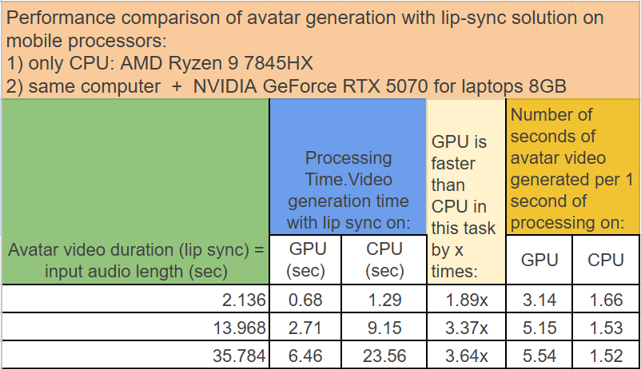

Dear Potential Investor,
I'm excited to present a technology that combines social impact with strong commercial potential.
A cutting-edge, scalable AI avatar technology offering both social impact (enhanced accessibility) and strong commercial potential.
Stands out with unique competitive advantages over existing market leaders, positioning it for rapid expansion and market capture.
Market Opportunities and Investment Advantages
Why This Investment Matters:
- Clear competitive advantages over market leaders
- Proven technology already helping people with disabilities
- Multiple revenue streams from both B2C and B2B applications
- Scalable solution with low infrastructure requirements
- Growing market in AI accessibility solutions
Key high-growth markets include:
- Robotics - interfaces for humanoid robots
- Avatar assistance — a secure local solution for businesses of any size, ensuring full data privacy and eliminating leakage risks, whether for large corporations or small businesses.
- Medical Rehabilitation - assistive technologies for people with disabilities
- Digital Media - social media and marketing content generation
Key Features and Advantages Over Market Leaders
Key Features:
- Avatar creation with lip sync and full voice cloning. An avatar can be generated from almost any video or photo. Once created, it can voice any text or audio with perfect lip synchronization in any language.
Key differentiators from competitors:
- High speed: Lip-synced audio-video playback begins almost instantly, even on a mobile CPU with NO gpu

- Energy efficiency: The technology is optimized for low-cost hardware, significantly reducing infrastructure costs and energy consumption.
- Local deployment: The solution operates without cloud services, ensuring full data privacy and eliminating leakage risks—a critical feature for corporate use.
- Additional video effects: Streaming mode supports overlays like backgrounds, shapes, text, drawing, and more.
- Unlimited video length: Even if the source avatar sample is only 3 seconds long, the system automatically extends the output video to any duration.
- Realistic voice cloning: The technology creates a true voice clone (indistinguishable from the original, not just similar). Quality rivals commercial solutions (e.g., Microsoft), but with smaller models, faster performance, and lower resource demands—reducing operational costs.
- "Talk to Me" feature: A unique way to interact with diverse characters, from pirates to literary figures like Anna Karenina or Don Quixote, in their signature styles.
Examples of Product Use Cases
Note: Everything you see below is running live on a mini pc with mobile CPU AMD Ryzen 9 7845HX !!with NO gpu!!
1) Live Streaming with Overlay Effects
Important: This is not post-production editing but a real-time video stream with dynamic effects.
Demo: https://t.me/gagarin_data_labs/126
3) Telegram Bot for Voice/Appearance Loss Assistance
Helps people who have lost their voice or facial mobility to communicate.
Supports avatar integration, synthetic voices, full voice cloning, and the "Talk to Me" feature.
Demo/Instructions: https://t.me/f1KostyaBot/35
Bot Link: https://t.me/kostin_voice_bot
Next Steps
The product is already operational and under active development. If you're interested, I'm ready to:
- Provide a detailed demo.
- Answer all your questions.
I look forward to collaborating!